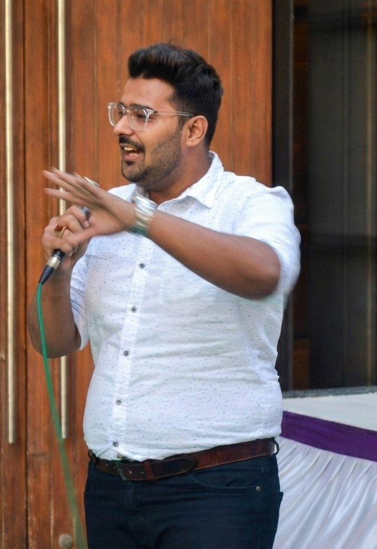
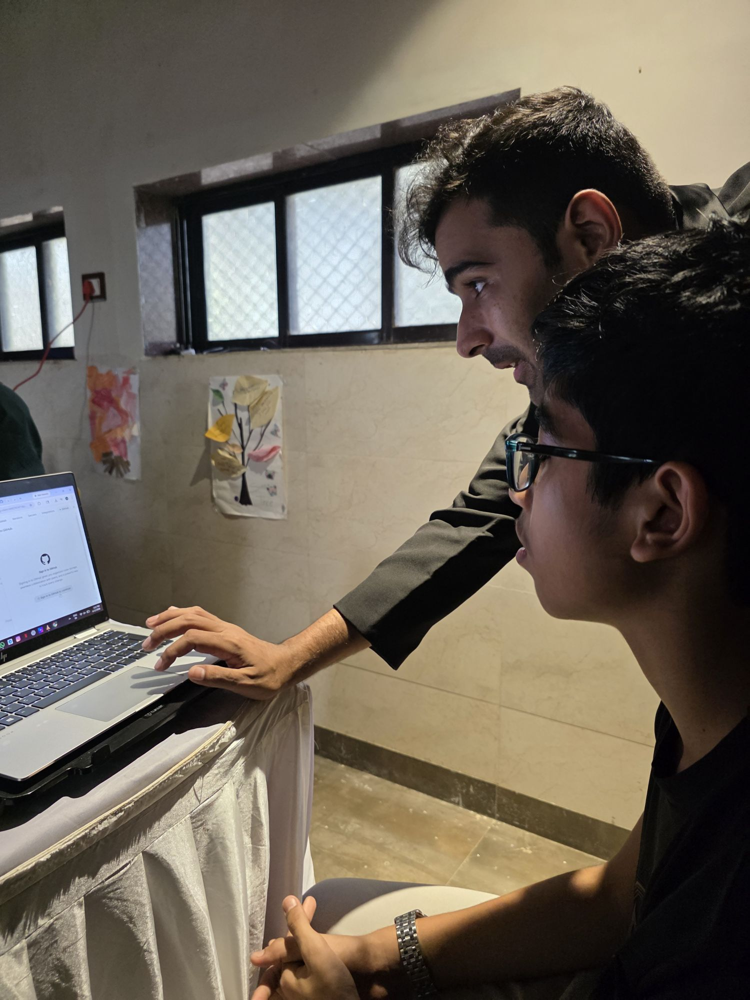
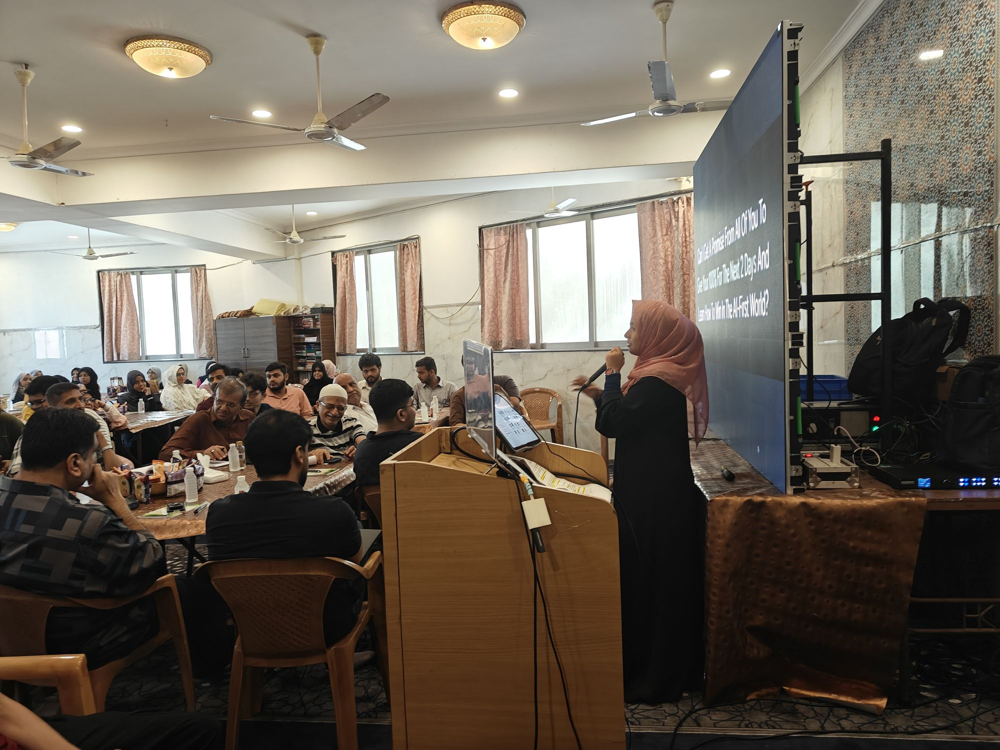
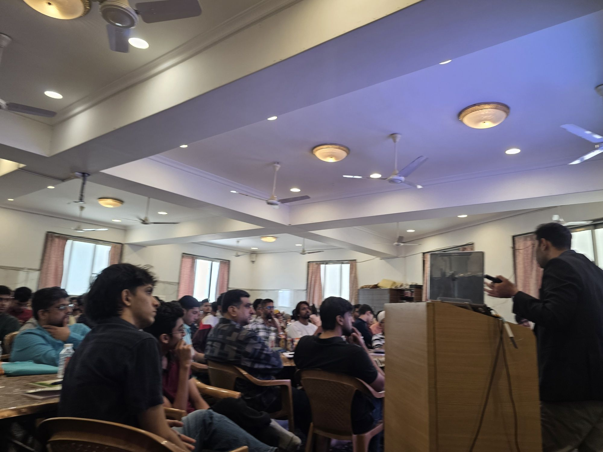

“All creatures are the family of Allah, and the most beloved of them to Allah is the one who benefits Allah’s family and brings joy to a household.”
“Whoever wakes up in the morning without concern for the affairs of the Muslims is not one of them.”
History of the Khoja Shia Ithna Asheris
Centuries of faith, and Bombay at the heart of it.
The Khojas carry a long history and a rich heritage. It would not be wrong to say Mumbai is the very birthplace of the Khoja Shia Ithna Asheris worldwide.
Kindly recite Surah Fatiha for Amar Shaheed Marhoom Sheth Hirjeebhoy Allarakhia and Marhoom Sheth Laljeebhoy Sajan, martyred protecting the Khoja Masjid in 1901.
Bombay harbour at dawn. An illustrative recreation.
c. 1276
The beginning
Pir Sadruddin, a Dai of the Nizari branch, arrives in Sindh. The Thakkars of the Lohana caste are introduced to the personality of Imam Ali (a.s.), and in time are given the title Khwaja: Khoja.
1872
A teacher for Bombay
At the request of Dewji Jamal, Ayatullah Zainul Aabedeen Mazandarani sends Mulla Qadar Hussain Karbalayi to Bombay. He teaches the Ithna Asheri faith at a madressa near Palagali, now Hazrat Abbas (a.s.) Street.
1901
A Jamaat is born
The Khoja Shia Ithna Asheri Jamaat is announced and the Khoja Masjid established at Palagali. On 9 March 1901 Hirjibhai Allarakhia and Laljibhai Sajan are martyred protecting it.
Today
Four centres, one family
Dongri, Juhu Kapaswadi, Arambaug and Palghar. The first Jamat in India to build a Khoja Heritage Wall (2023), and now teaching AI to the community.
For centuries our faith has been drawn in geometry.
Every star in a jaali is a network: points, connected.
In 2026, we picked up a new pen.
KSIJ brought artificial intelligence into its own halls, taught hands-on to 2,500 members.
Eight 2-Day AI Bootcamps · A huge success
Full halls, open laptops, and a community that showed up.
Eight bootcamps, including in our own halls at Arambagh, Dongri and Juhu. Members of every age spent two days building with AI. Not a lecture: a workshop, laptop open, from the first prompt to a finished project.
Day 1
Foundations of multiple AI tools, finishing with a landing page each participant built.
Day 2
Building AI bots and AI products, and putting them to real use.
2,500
people attended, across 8 bootcamps.

Led byAli Mehdi HemaniFounder & CEO, Digitalist Institute of Innovation and Technology (DIT). National Award winner, Government of India. 5,000+ students trained.
Juhu Kapaswadi, Andheri. Day 2, 3 May 2026.Dongri, Mumbai. 25 to 26 Apr 2026.

Arambagh, Mazgaon. One to one, 12 Apr 2026.
Arambagh, Mazgaon. Day 2, 12 Apr 2026.

Juhu Kapaswadi, Andheri. Day 1, 2 May 2026.

Juhu Kapaswadi, Andheri. Day 1, 2 May 2026.Arambagh, Mazgaon. Prompt engineering, 11 to 12 Apr 2026.
At our own centres
Arambagh, Mazgaon11 to 12 Apr 2026
Dongri, Mumbai25 to 26 Apr 2026
Juhu Kapaswadi, Andheri2 to 3 May 2026
KSIJ Mumbai Youth Committee presents
The KSIJ AI Hackathon.
4 OctSunday, 2026
·days to go
Innovate. Collaborate. Impact. The bootcamps taught us to build; now we build together. Real ideas, real solutions, real impact.
 Mr. Ali Akbar M. ShroffHon. President
Mr. Ali Akbar M. ShroffHon. President Mr. Mohamed Raza D. ParekhHon. Vice President
Mr. Mohamed Raza D. ParekhHon. Vice President Mr. Sajjad Pyarali ShroffHon. Secretary
Mr. Sajjad Pyarali ShroffHon. Secretary Mr. Nadeem Parvez HalaniHon. Joint Secretary
Mr. Nadeem Parvez HalaniHon. Joint Secretary Mr. Irfan Mohsin KarimHon. Treasurer
Mr. Irfan Mohsin KarimHon. Treasurer Mr. Rizwan Fida Husain BatliwalaHon. Joint Treasurer
Mr. Rizwan Fida Husain BatliwalaHon. Joint Treasurer Advocate Sajjad H. PatelLegal Advisor
Advocate Sajjad H. PatelLegal Advisor